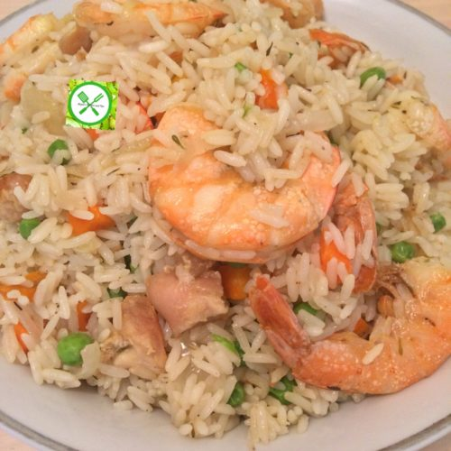
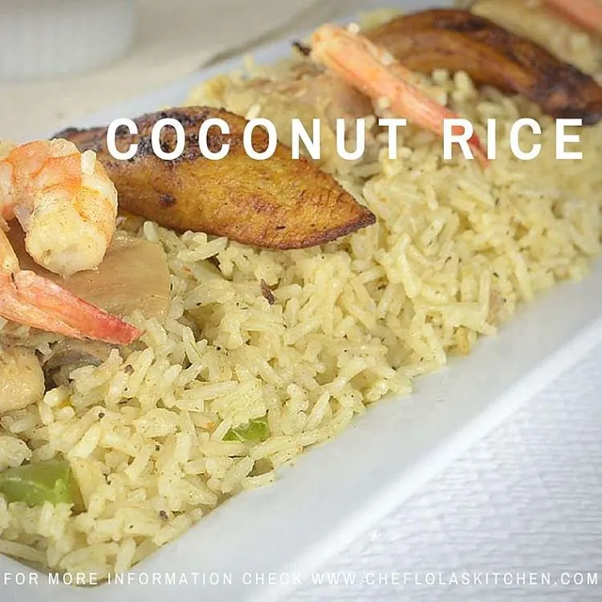
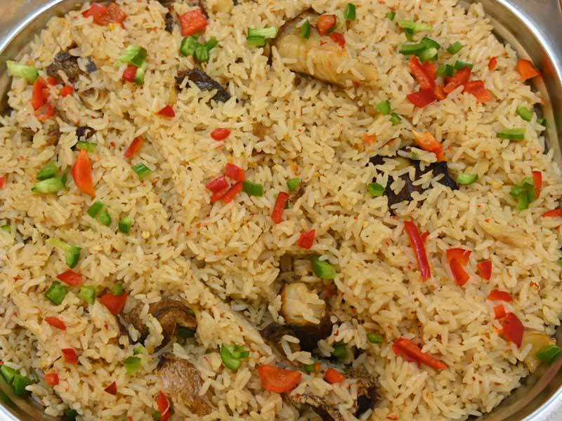
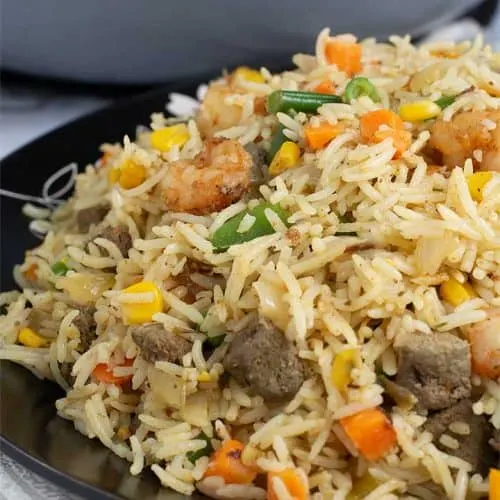
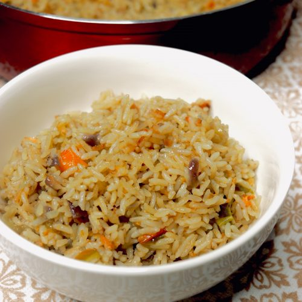

Welcome To My Recipe Page
About My Favorite Meal
My favourite meal is Coconut Rice a popular West-African
dish. Coconut rice is one of the most popular
foods in West Africa, although the ingredients and methods of preparation
vary from location to region,
the dish is often made in a single pot with long-grain rice, coconut milk,
onions, spices, vegetables, and
chicken stock.
Origin
Coconut rice is typically prepared by soaking white rice in coconut milk
or cooking it with coconut flakes.
Though coconut rice is found in many cultures of the world, it is believed
to have its origins in the South
Asia, Southeast Asia and Latin America regions. It is a rice dish that is
used in cuisines such as Caribbean,
Tropical (Hawaiian!) as well as South East Asian foods such as Thai and
Malaysian foods. There is no clear
history of its origin. But, it can be said that this recipe comes from the
culinary mixtures of African.
Steps to prepare the meal
-
Wash the rice until the water is clear. I usually wash mine for about
4-5 times. This is very important in order to
reduce the starch and avoid ending up with mushy rice. If your rice ends
up mushy, you will not enjoy it, so this
step is very crucial.
- Cut all veggies into cubes with kitchen knife and set aside.
-
Wash the chicken or any other type of meat. Season and cook until
tender. You can further fry, grill, or roast them.
-
On a medium heat, heat up vegetable oil and add the onions to sauté.
- Add the salt, ginger, garlic and the seasoning cubes.
-
Add the chicken stock and the coconut milk, cover, and allow to boil for
about 5 minutes.
-
Now, add the washed rice to the boiling chicken stock & coconut milk.
-
Cover with foil paper and let it cook in less than medium heat (steam)
until soft and well cooked.
-
Check after about 30 minutes to see if it is well cooked. A little
quantity of water can be added if need be.
-
Add the sliced spring onions and cover to steam for another five
minutes, then take it away from the heat
-
In another deep pan, add vegetable oil and fry the veggies one after the
other (carrots, green beans, prawns, gizzard,
onions) and set them aside.
-
In the same deep pan, add the veggies bit by bit and also add some
cooked rice in bits and mix them together.
Repeat this process until everything is well mixed.
- Cover and allow to simmer for about three minutes.
- Then your coconut rice is ready!
- Can you perceive the goodness already?
- Serve hot with any protein and cold drink of your choice.
- Enjoy!




